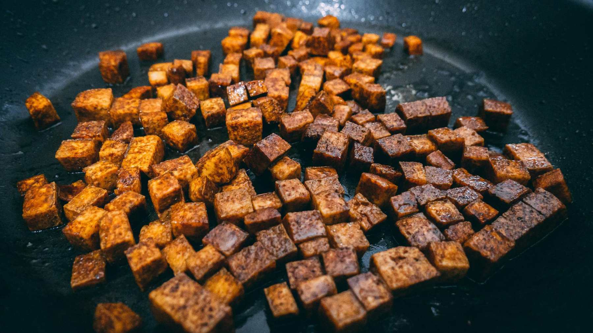

Antes de comenzar con nuestra elaboración, es aconsejable prensar bien el tofu para que suelte todo el líquido que contiene en su interior. Para ello, podemos hacerlo con papel de cocina. Envolvemos el tofu con ello y apretamos un poquito con las manos. Soltará el poco líquido que contenga dentro.
Hecho esto, cortamos el tofu en dados de 1cm de grosor aproximadamente y lo colocamos en un bol amplio. A continuación, añadimos aquí el zumo de los 2 limones, los dientes de ajo bien picados, las especias -romero, tomillo y orégano- y unos 200ml de agua. Salpimentamos y añadimos también vinagre al gusto. Mezclamos bien todos estos ingredientes y dejamos que se el tofu se marine durante unas 4 horas removiendo todo con cierta frecuencia para que se impregne bien del sabor de esta mezcla.
Pasado este tiempo, seguimos con la elaboración de nuestro tofu marinado con verduras. Escurrimos el tofu de su mezcla, reservando unos 100ml de este marinado. Mientras tanto, preparamos las verduras que acompañarán a nuestro tofu marinado. En un wok o una sartén amplia ponemos un chorrito de aceite a fuego fuerte. Cuando esté caliente, añadimos la cebolla, el pimiento verde y el pimiento rojo, todos estos ingredientes previamente cortados en tiras de tamaño de bocado. Salpimentamos y salteamos todo durante unos 10 minutos.
Mientras tanto, en otra sartén o plancha, ponemos otro chorrito también a fuego fuerte. Cuando esté caliente, añadimos el tofu y lo cocinamos bien durante unos 5 minutos por todas sus caras. La idea es que el tofu marinado coja un color dorado por fuera y que su interior se mantenga cremoso.

Servimos inmediatamente pudiendo espolvorear algo de cilantro fresco picado.
Esta página está realizada por Francisco Ruiz Nieto Trabajo realizado por el Equipo 3, formado por: Marta Albarracín Martín, Jesús Cara Serrano,
Iván Fernández Aroca, Jonathan Martín Páez, Pablo Padial Salazar y Francisco Ruiz Nieto.